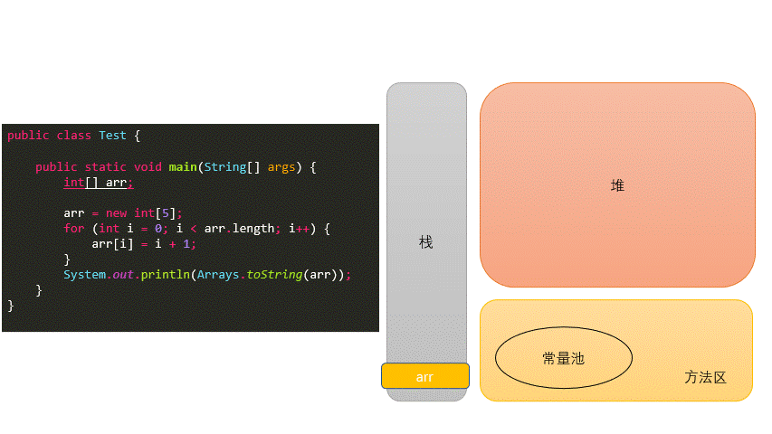
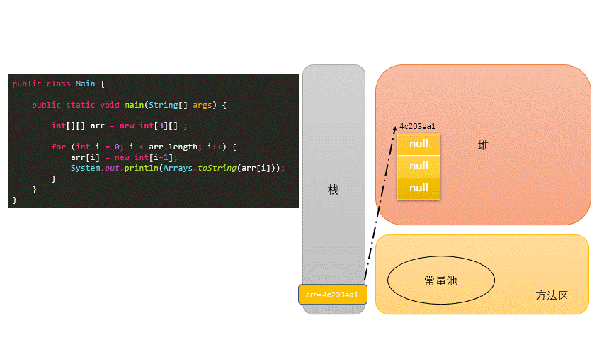
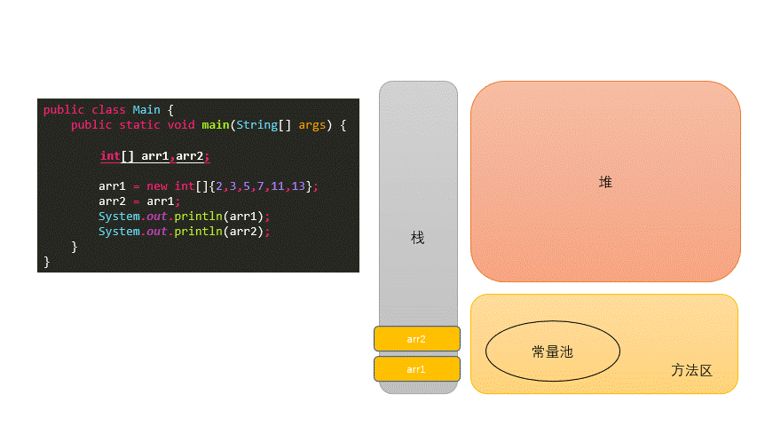
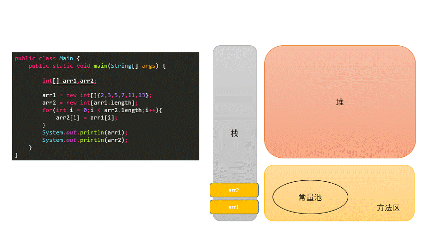
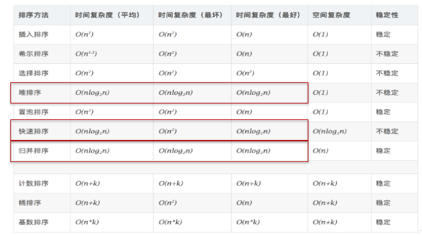

7. 数组¶
7.1. 数组概述¶
数组(Array)，是多个相同类型数据按一定顺序排列的集合，并使用一个名字命名，并通过编号的方式对这些数据进行统一管理。
数组的常见概念
数组名
下标(或索引)
元素
数组的长度
数组本身是引用数据类型，而数组中的元素可以是任何数据类型，包括基本数据类型和引用数据类型。
创建数组对象会在内存中开辟一整块连续的空间，而数组名中引用的是这块连续空间的首地址。
数组的长度一旦确定，就不能修改。
我们可以直接通过下标(或索引)的方式调用指定位置的元素，速度很快。
数组的分类：
按照维度：一维数组、二维数组、三维数组、…
按照元素的数据类型分：基本数据类型元素的数组、引用数据类型元素的数组(即对象数组)
7.2. 一维数组¶
7.2.1. 声明¶
声明方式
type var[]或者type[] varJava语言中声明数组时不能指定其长度(数组中元素的数)例如：int a[5];—->非法
7.2.2. 初始化¶
动态初始化：数组声明且为数组元素分配空间与赋值的操作分开进行
静态初始化：在定义数组的同时就为数组元素分配空间并赋值。
int[] ids;//声明 //1.1 静态初始化:数组的初始化和数组元素的赋值操作同时进行 ids = new int[]{1001,1002,1003,1004}; //1.2动态初始化:数组的初始化和数组元素的赋值操作分开进行 String[] names = new String[5]; // 声明 + 初始化 //1.3类型推断 int[] arr4 = {1,2,3,4,5};
7.2.3. 数组元素的引用¶
定义并用运算符
new为之分配空间后，才可以引用数组中的每个元素数组元素的引用方式：数组名[数组元素下标]
数组元素下标可以是整型常量或整型表达式。如
a[3] , b[i] , c[6*i];数组元素下标从
0开始；长度为n的数组合法下标取值范围:0~n-1；如int a[]=new int[3];可引用的数组元素为a[0]、a[1]、a[2]
每个数组都有一个属性
length指明它的长度，例如：a.length指明数组a的长度(元素个数)数组一旦初始化，其长度是不可变的
数组是引用类型，它的元素相当于类的成员变量，因此数组一经分配空间，其中的每个元素也被按照成员变量同样的方式被隐式初始化。
对于基本数据类型而言，默认初始化值各有不同
对于引用数据类型而言，默认初始化值为
null
7.2.4. 数组元素默认初始化值¶
| 数组元素类型 | 元素默认初始化值 |
|---|---|
| byte | 0 |
| short | 0 |
| int | 0 |
| long | 0L |
| float | 0.0F |
| double | 0.0 |
| char | 0 或写为:\u0000(表现为空) |
| boolean | false |
| 引用类型 | null |
7.2.5. 一维数组创建过程¶

7.3. 多维数组¶
7.3.1. 何为二维数组¶
数组属于引用数据类型
数组的元素也可以是引用数据类型
一个一维数组A的元素如果还是一个一维数组类型的，则，此数组A称为二维数组。
7.3.2. 二维数组的声明与初始化¶
int[] arr = new int[]{1, 2, 3};//一维数组
//静态初始化1
int[][] arr1 = new int[][]{{1, 2, 3}, {4, 5}, {6, 7, 8}};
//动态初始化
String[][] arr2 = new String[3][2];
// 动态初始化2
String[][] arr3 = new String[3][];
// 正确写法
int[] arr4[] = new int[][]{{1, 2, 3}, {4, 5, 9, 10}, {6, 7, 8}};
int[] arr5[] = {{1, 2, 3}, {4, 5}, {6, 7, 8}}; // 类型推断
注意特殊写法情况：
int[] x,y[];x是一维数组，y是二维数组。Java中多维数组不必都是规则矩阵形式
7.3.3. 二维数组初始化值¶
二维数组分为外层数组的元素，内层数组的元素
int[][] arr = new int[4][3]; //外层元素：arr[0],arr[1]等 //内层元素：arr[0][0],arr[1][2]等
数组元素的默认初始化值
针对于初始化方式一：比如：
int[][] arr = new int[4][3];外层元素的初始化值为：地址值
内层元素的初始化值为：与一维数组初始化情况相同
针对于初始化方式二：比如：
int[][] arr = new int[4][];外层元素的初始化值为：
null内层元素的初始化值为：不能调用，否则报错。

7.3.4. 数组数据元素的访问¶
通过索引下标
数组通过索引下标
index来进行数组元素的访问，第一个元素的index为0java不能像python一样通过-1, -2进行倒序索引查找
通过循环来访问
// 普通的for循环 public class Main { public static void main(String[] args) { int[] arr = new int[10]; //普通for循环 for(int i = 0;i<arr.length;i++) { arr[i] = (int)(Math.random()*100); } for(int i = 0; i<arr.length;i++) { System.out.println(arr[i]); } } } // for each public class Main { public static void main(String[] args) { int[] arr = new int[10]; for(int i = 0;i<arr.length;i++) { arr[i] = (int)(Math.random()*100); } // for each for(int num : arr) { System.out.println(num); } } }
下面代码方便理解java二维数组
public class Main {
public static void main(String[] args) {
// 动态
int[][] ints1 = new int[4][];
int[][] ints2 = new int[4][3];
// System.out.println(ints1[1][0]); // java.lang.NullPointerException
System.out.println(ints2[1][0]);
int[][] ints5 = new int[5][3];
System.out.println(ints5[0]);
System.out.println(ints5[1][0]);
String[][] strings2 = new String[4][];
System.out.println(strings2[0]);
// System.out.println(strings2[1][2]); // java.lang.NullPointerException
}
}
// console :0, [I@4c203ea1 ,0 ,null
7.4. 数组的常见算法¶
7.4.1. 数组的创建与元素赋值：¶
杨辉三角
/* 1 1 1 1 2 1 1 3 3 1 1 4 6 4 1 1 5 10 10 5 1 1 6 15 20 15 6 1 1 7 21 35 35 21 7 1 1 8 28 56 70 56 28 8 1 1 9 36 84 126 126 84 36 9 1 */ public class YangHui { public static void main(String[] args) { int[][] yangHui = new int[10][]; for (int i = 0; i < yangHui.length; i++) { // 给二维数组赋值 yangHui[i] = new int[i + 1]; yangHui[i][0] = yangHui[i][i] = 1; for (int j = 1; j < yangHui[i].length - 1; j++) { yangHui[i][j] = yangHui[i - 1][j - 1] + yangHui[i - 1][j]; } } for (int i = 0; i < yangHui.length; i++) { for (int j = 0; j < yangHui[i].length; j++) { System.out.print(yangHui[i][j] + " "); } System.out.println(); } } }
螺旋矩阵
/* * 1 2 3 * 8 9 4 * 7 6 5 */ public class SpiralMatrixII { public static void main(String[] args) { Scanner scanner = new Scanner(System.in); System.out.println("请输入你想构建的螺旋矩阵长度为："); int number = scanner.nextInt(); int[][] spiralMatrix = new int[number][number]; // 左 int left = 0; // 右 int right = number - 1; // 上 int top = 0; // 下 int bottom = number - 1; int insertNumber = 1; int resultNumber = number * number; while (insertNumber <= resultNumber) { for (int i = left; i <= right; i++) { spiralMatrix[top][i] = insertNumber++; } top++; for (int i = top; i <= bottom; i++) { spiralMatrix[i][right] = insertNumber++; } right--; for (int i = right; i >= left; i--) { spiralMatrix[bottom][i] = insertNumber++; } bottom--; for (int i = bottom; i >= top; i--) { spiralMatrix[i][left] = insertNumber++; } left++; } for (int i = 0; i < spiralMatrix.length; i++) { for (int j = 0; j < spiralMatrix[i].length; j++) { System.out.printf("%2d ", spiralMatrix[i][j]); } System.out.println(); } } }
7.4.2. 针对于数值型的数组：¶
最大值
最小值
总和
平均值
7.4.3. 数组的赋值与复制¶
赋值

复制(浅copy)

验证浅copy代码
public class Main { public static void main(String[] args) { Person[] arr1, arr2; arr1 = new Person[2]; arr1[0] = new Person(); arr1[1] = new Person(); arr2 = new Person[arr1.length]; for (int i = 0; i < arr2.length; i++) { arr2[i] = arr1[i]; } System.out.println(arr2[0] == arr1[0]); System.out.println(arr1[0].name); System.out.println(arr2[0].name); arr1[0].name = "李四"; System.out.println(arr1[0].name); System.out.println(arr2[0].name); } } class Person { String name = "张三"; int age = 10; }
7.4.4. 数组元素的反转¶
// 方法一
public class Main {
public static void main(String[] args) {
int[] arr;
arr = new int[]{2,3,5,7,11,13};
for(int i = 0;i < arr.length / 2;i++){
int temp = arr[i];
arr[i] = arr[arr.length - i -1];
arr[arr.length - i -1] = temp;
}
System.out.println(Arrays.toString(arr));
}
}
// 方法二
public class Main {
public static void main(String[] args) {
int[] arr;
arr = new int[]{2,3,5,7,11,13};
for(int i = 0,j = arr.length - 1;i < j;i++,j--){
int temp = arr[i];
arr[i] = arr[j];
arr[j] = temp;
}
System.out.println(Arrays.toString(arr));
}
}
7.4.5. 数组中指定元素的查找：搜索、检索¶
线性查找：
实现思路：通过遍历的方式，一个一个的数据进行比较、查找。
适用性：具有普遍适用性。
public class Hello { public static void main(String[] args) { String[] arr = new String[]{"JJ","DD","MM","BB","GG","AA"}; String dest = "BB"; boolean isFlag = true; for (int i = 0; i < arr.length; i++) { if (dest.equals(arr[i])) { System.out.println("找到了指定的元素，位置为：" + i); isFlag = false; break; } } if (isFlag) { System.out.println("很遗憾，没有找到的啦！"); } } }
二分法查找：
实现思路：每次比较中间值，折半的方式检索。
适用性：（前提：数组必须有序）
public class Hello { public static void main(String[] args) { //二分法查找：(熟悉) //前提：所要查找的数组必须有序。 int[] arr = new int[]{-98, -34, 2, 34, 54, 66, 79, 105, 210, 333}; int dest = -34; int head = 0;//初始的首索引 int end = arr.length - 1;//初始的末索引 boolean isFlag = true; while (head <= end) { int middle = (head + end) / 2; if (dest == arr[middle]) { System.out.println("找到了指定的元素，位置为：" + middle); isFlag = false; break; } else if (arr[middle] > dest) { end = middle - 1; } else {//arr2[middle] < dest1 head = middle + 1; } } if (isFlag) { System.out.println("很遗憾，没有找到的啦！"); } } }
7.5. 数组的排序算法¶
7.5.1. 十大内部排序算法¶
选择排序
直接选择排序、堆排序
交换排序
冒泡排序、快速排序
插入排序
直接插入排序、折半插入排序、Shell排序
归并排序
桶式排序
基数排序
7.5.2. 衡量排序算法的优劣：¶
时间复杂度
空间复杂度
稳定性
7.5.3. 排序的分类：¶
内部排序
外部排序（需要借助于磁盘）
7.5.4. 不同排序算法的时间复杂度¶

7.5.5. 冒泡和快排的实现¶
冒泡排序

public class Bubble { public static void main(String[] args) { int[] ints = new int[]{-77, -2, 13, -32, 7, 0, 11, 28, 79, 22}; // 只需要排-1 次就够了 for (int i = 0; i < ints.length - 1; i++) { for (int j = 0; j < ints.length - 1 - i; j++) { if (ints[j] > ints[j + 1]) { int temp = ints[j]; ints[j] = ints[j + 1]; ints[j + 1] = temp; } } } for (int i = 0; i < ints.length; i++) { System.out.print(ints[i] + "\t"); } } }
快速排序

public class QuickSort { private static void swap(int[] data, int i, int j) { int temp = data[i]; data[i] = data[j]; data[j] = temp; } private static void subSort(int[] data, int start, int end) { if (start < end) { int base = data[start]; int low = start; int high = end + 1; while (true) { while (low < end && data[++low] - base <= 0) ; while (high > start && data[--high] - base >= 0) ; if (low < high) { swap(data, low, high); } else { break; } } swap(data, start, high); subSort(data, start, high - 1);//递归调用 subSort(data, high + 1, end); } } public static void quickSort(int[] data){ subSort(data,0,data.length-1); }